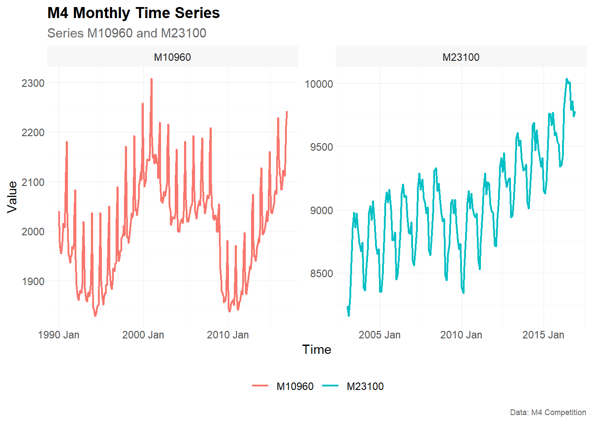
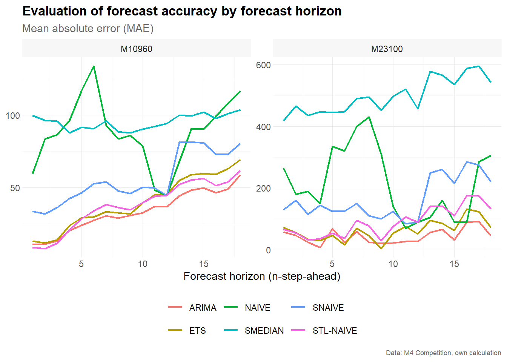
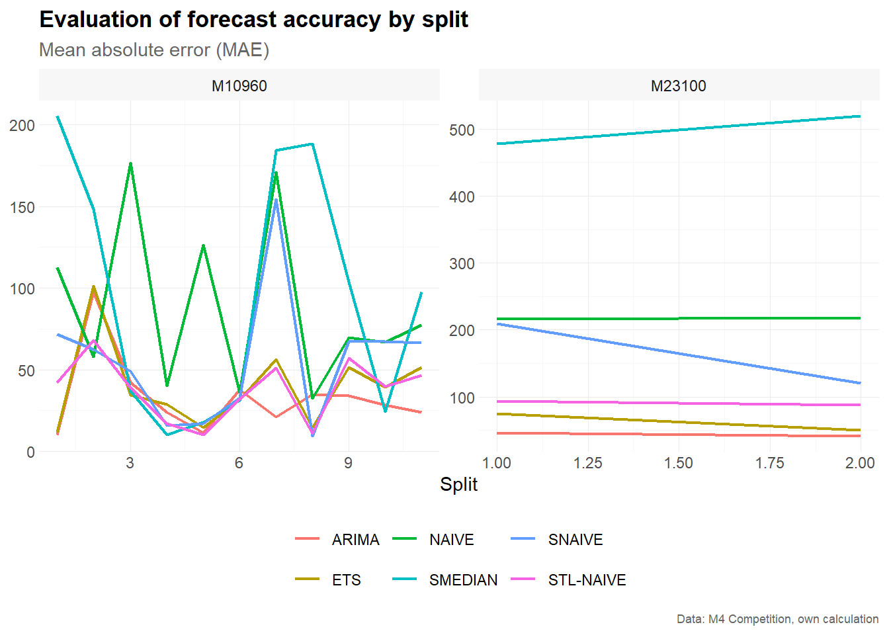

Time Series Cross Validation with M4 Monthly Data
Alexander Häußer
April 2026
Source:vignettes/tscv-m4-monthly.Rmd
tscv-m4-monthly.RmdThe package tscv provides a collection of functions and
tools for time series analysis and forecasting as well as time series
cross-validation. This is mainly a set of wrapper and helper functions
as well as some extensions for the packages tsibble,
fable and fabletools that I find useful for
research in the area of time series forecasting.
Disclaimer: The tscv package
is highly experimental and it is very likely that there will be
(substantial) changes in the near future.
Installation
You can install the development version from GitHub with:
# install.packages("devtools")
devtools::install_github("ahaeusser/tscv")Data preparation
The data set M4_monthly_data is a tibble
with selected monthly time series from the M4 forecasting competition.
It contains the following columns:
-
index: monthly time index -
series: time series ID from the M4 forecasting competition -
category: category from the M4 forecasting competition -
value: measurement variable
In this vignette, we use two monthly time series, M10960
and M23100, to demonstrate time series cross-validation
with a fixed window approach and an 18-month-ahead forecast horizon. You
can use the function plot_line() to visualize the two time
series. The function summarise_data() is used to explore
the structure (start date, end date, number of observations and the
number missing and zero values). The function
summarise_stats() calculates descriptive statistics for
each time series.
series_id = "series"
value_id = "value"
index_id = "index"
context <- list(
series_id = series_id,
value_id = value_id,
index_id = index_id
)
# Prepare data set
main_frame <- M4_monthly_data |>
filter(series %in% c("M10960", "M23100"))
main_frame
#> # A tibble: 492 × 4
#> index series category value
#> <mth> <chr> <chr> <dbl>
#> 1 1990 Jan M10960 Micro 2040
#> 2 1990 Feb M10960 Micro 1977
#> 3 1990 Mar M10960 Micro 1966
#> 4 1990 Apr M10960 Micro 1955
#> 5 1990 May M10960 Micro 1959
#> 6 1990 Jun M10960 Micro 1979
#> 7 1990 Jul M10960 Micro 2015
#> 8 1990 Aug M10960 Micro 2011
#> 9 1990 Sep M10960 Micro 2007
#> 10 1990 Oct M10960 Micro 2037
#> # ℹ 482 more rows
main_frame |>
plot_line(
x = index,
y = value,
color = series,
facet_var = series,
title = "M4 Monthly Time Series",
subtitle = "Series M10960 and M23100",
xlab = "Time",
ylab = "Value",
caption = "Data: M4 Competition"
)
#> Warning: Using `size` aesthetic for lines was deprecated in ggplot2 3.4.0.
#> ℹ Please use `linewidth` instead.
#> ℹ The deprecated feature was likely used in the tscv package.
#> Please report the issue at <https://github.com/ahaeusser/tscv/issues>.
#> This warning is displayed once per session.
#> Call `lifecycle::last_lifecycle_warnings()` to see where this warning was
#> generated.
#> Warning: The `size` argument of `element_line()` is deprecated as of ggplot2 3.4.0.
#> ℹ Please use the `linewidth` argument instead.
#> ℹ The deprecated feature was likely used in the tscv package.
#> Please report the issue at <https://github.com/ahaeusser/tscv/issues>.
#> This warning is displayed once per session.
#> Call `lifecycle::last_lifecycle_warnings()` to see where this warning was
#> generated.
#> Warning: The `size` argument of `element_rect()` is deprecated as of ggplot2 3.4.0.
#> ℹ Please use the `linewidth` argument instead.
#> ℹ The deprecated feature was likely used in the tscv package.
#> Please report the issue at <https://github.com/ahaeusser/tscv/issues>.
#> This warning is displayed once per session.
#> Call `lifecycle::last_lifecycle_warnings()` to see where this warning was
#> generated.
summarise_data(
.data = main_frame,
context = context
)
#> # A tibble: 2 × 8
#> series start end n_obs n_missing pct_missing n_zeros pct_zeros
#> <chr> <mth> <mth> <int> <int> <dbl> <int> <dbl>
#> 1 M10960 1990 Jan 2016 Dec 324 0 0 0 0
#> 2 M23100 2003 Jan 2016 Dec 168 0 0 0 0
summarise_stats(
.data = main_frame,
context = context
)
#> # A tibble: 2 × 11
#> series mean median mode sd p0 p25 p75 p100 skewness kurtosis
#> <chr> <dbl> <dbl> <dbl> <dbl> <dbl> <dbl> <dbl> <dbl> <dbl> <dbl>
#> 1 M10960 2008. 2022 2035. 101. 1829 1924. 2072. 2308 0.129 2.36
#> 2 M23100 9059. 9050 9040. 394. 8160 8768. 9310 10040 0.222 2.74Split data into training and testing
To prepare the data set for time series cross-validation (TSCV), you
can use the function make_split(). This function splits the
data into several slices for training and testing (i.e. partitioning
into time slices) for time series cross-validation. You can choose
between stretch and slide. The first is an
expanding window approach, while the latter is a fixed window approach.
Furthermore, we define the (initial) window size for training and
testing via n_init and n_ahead, as well as the
step size for increments via n_skip. Further options for
splitting the data are available via type (see function
reference for more details).
In this vignette, we use a fixed window approach with a 120-month
training window and an 18-month testing window. The value
n_skip = 17 creates non-overlapping 18-month test
windows.
# Setup for time series cross validation
type = "first"
value = 120 # size for training window (= 10 years of monthly observations)
n_ahead = 18 # size for testing window (= forecast horizon, 18 months ahead)
n_skip = 17 # skip 17 observations to obtain non-overlapping test windows
n_lag = 0 # no lag
mode = "slide" # fixed window approach
exceed = FALSE # only pseudo out-of-sample forecast
split_frame <- make_split(
main_frame = main_frame,
context = context,
type = type,
value = value,
n_ahead = n_ahead,
n_skip = n_skip,
n_lag = n_lag,
mode = mode,
exceed = exceed
)
split_frame
#> # A tibble: 13 × 4
#> series split train test
#> <chr> <int> <list> <list>
#> 1 M10960 1 <int [120]> <int [18]>
#> 2 M10960 2 <int [120]> <int [18]>
#> 3 M10960 3 <int [120]> <int [18]>
#> 4 M10960 4 <int [120]> <int [18]>
#> 5 M10960 5 <int [120]> <int [18]>
#> 6 M10960 6 <int [120]> <int [18]>
#> 7 M10960 7 <int [120]> <int [18]>
#> 8 M10960 8 <int [120]> <int [18]>
#> 9 M10960 9 <int [120]> <int [18]>
#> 10 M10960 10 <int [120]> <int [18]>
#> 11 M10960 11 <int [120]> <int [18]>
#> 12 M23100 1 <int [120]> <int [18]>
#> 13 M23100 2 <int [120]> <int [18]>Training and forecasting
The training and test splits are prepared within
split_frame and we are ready for forecasting. The function
slice_train() slices the data main_frame
according to the splits within split_frame. As we are using
forecasting methods from the packages fable and
fabletools, we have to convert the data set
main_frame from a tibble to a
tsibble.
For the monthly M4 data, we use simple benchmark and automatic forecasting methods:
-
NAIVE: naive random walk model -
SNAIVE: seasonal naive model with yearly seasonality -
STL-NAIVE: STL-decomposition model and naive forecast. The series is decomposed via STL and the seasonally adjusted series is predicted via the naive approach. Afterwards, the seasonal component is added to the forecasts -
ETS: exponential smoothing state space model -
ARIMA: automatic ARIMA model -
SMEDIAN: seasonal median model with yearly seasonality
The function SMEDIAN() is an extension to the
fable package.
# Slice training data from main_frame according to split_frame
train_frame <- slice_train(
main_frame = main_frame,
split_frame = split_frame,
context = context
)
train_frame
#> # A tibble: 1,560 × 5
#> index series category value split
#> <mth> <chr> <chr> <dbl> <int>
#> 1 1990 Jan M10960 Micro 2040 1
#> 2 1990 Feb M10960 Micro 1977 1
#> 3 1990 Mar M10960 Micro 1966 1
#> 4 1990 Apr M10960 Micro 1955 1
#> 5 1990 May M10960 Micro 1959 1
#> 6 1990 Jun M10960 Micro 1979 1
#> 7 1990 Jul M10960 Micro 2015 1
#> 8 1990 Aug M10960 Micro 2011 1
#> 9 1990 Sep M10960 Micro 2007 1
#> 10 1990 Oct M10960 Micro 2037 1
#> # ℹ 1,550 more rows
# Convert tibble to tsibble
train_frame <- train_frame |>
as_tsibble(
index = index,
key = c(series, split)
)
train_frame
#> # A tsibble: 1,560 x 5 [1M]
#> # Key: series, split [13]
#> index series category value split
#> <mth> <chr> <chr> <dbl> <int>
#> 1 1990 Jan M10960 Micro 2040 1
#> 2 1990 Feb M10960 Micro 1977 1
#> 3 1990 Mar M10960 Micro 1966 1
#> 4 1990 Apr M10960 Micro 1955 1
#> 5 1990 May M10960 Micro 1959 1
#> 6 1990 Jun M10960 Micro 1979 1
#> 7 1990 Jul M10960 Micro 2015 1
#> 8 1990 Aug M10960 Micro 2011 1
#> 9 1990 Sep M10960 Micro 2007 1
#> 10 1990 Oct M10960 Micro 2037 1
#> # ℹ 1,550 more rows
# Model training via fabletools::model()
model_frame <- train_frame |>
model(
"NAIVE" = NAIVE(value),
"SNAIVE" = SNAIVE(value ~ lag("year")),
"STL-NAIVE" = decomposition_model(STL(value), NAIVE(season_adjust)),
"ETS" = ETS(value),
"ARIMA" = ARIMA(value),
"SMEDIAN" = SMEDIAN(value ~ lag("year"))
)
model_frame
#> # A mable: 13 x 8
#> # Key: series, split [13]
#> series split NAIVE SNAIVE `STL-NAIVE` ETS
#> <chr> <int> <model> <model> <model> <model>
#> 1 M10960 1 <NAIVE> <SNAIVE> <STL decomposition model> <ETS(M,A,A)>
#> 2 M10960 2 <NAIVE> <SNAIVE> <STL decomposition model> <ETS(A,A,A)>
#> 3 M10960 3 <NAIVE> <SNAIVE> <STL decomposition model> <ETS(M,N,A)>
#> 4 M10960 4 <NAIVE> <SNAIVE> <STL decomposition model> <ETS(M,A,A)>
#> 5 M10960 5 <NAIVE> <SNAIVE> <STL decomposition model> <ETS(M,Ad,A)>
#> 6 M10960 6 <NAIVE> <SNAIVE> <STL decomposition model> <ETS(M,Ad,A)>
#> 7 M10960 7 <NAIVE> <SNAIVE> <STL decomposition model> <ETS(M,Ad,M)>
#> 8 M10960 8 <NAIVE> <SNAIVE> <STL decomposition model> <ETS(M,Ad,M)>
#> 9 M10960 9 <NAIVE> <SNAIVE> <STL decomposition model> <ETS(M,Ad,M)>
#> 10 M10960 10 <NAIVE> <SNAIVE> <STL decomposition model> <ETS(M,N,A)>
#> 11 M10960 11 <NAIVE> <SNAIVE> <STL decomposition model> <ETS(M,N,A)>
#> 12 M23100 1 <NAIVE> <SNAIVE> <STL decomposition model> <ETS(M,Ad,A)>
#> 13 M23100 2 <NAIVE> <SNAIVE> <STL decomposition model> <ETS(A,A,A)>
#> # ℹ 2 more variables: ARIMA <model>, SMEDIAN <model>
# Forecasting via fabletools::forecast()
fable_frame <- model_frame |>
forecast(h = n_ahead)
fable_frame
#> # A fable: 1,404 x 6 [1M]
#> # Key: series, split, .model [78]
#> series split .model index
#> <chr> <int> <chr> <mth>
#> 1 M10960 1 NAIVE 2000 Jan
#> 2 M10960 1 NAIVE 2000 Feb
#> 3 M10960 1 NAIVE 2000 Mar
#> 4 M10960 1 NAIVE 2000 Apr
#> 5 M10960 1 NAIVE 2000 May
#> 6 M10960 1 NAIVE 2000 Jun
#> 7 M10960 1 NAIVE 2000 Jul
#> 8 M10960 1 NAIVE 2000 Aug
#> 9 M10960 1 NAIVE 2000 Sep
#> 10 M10960 1 NAIVE 2000 Oct
#> # ℹ 1,394 more rows
#> # ℹ 2 more variables: value <dist>, .mean <dbl>
# Convert fable_frame (fable) to future_frame (tibble)
future_frame <- make_future(
fable = fable_frame,
context = context
)
future_frame
#> # A tibble: 1,404 × 6
#> index series model split horizon point
#> <mth> <chr> <chr> <int> <int> <dbl>
#> 1 2000 Jan M10960 NAIVE 1 1 2258
#> 2 2000 Feb M10960 NAIVE 1 2 2258
#> 3 2000 Mar M10960 NAIVE 1 3 2258
#> 4 2000 Apr M10960 NAIVE 1 4 2258
#> 5 2000 May M10960 NAIVE 1 5 2258
#> 6 2000 Jun M10960 NAIVE 1 6 2258
#> 7 2000 Jul M10960 NAIVE 1 7 2258
#> 8 2000 Aug M10960 NAIVE 1 8 2258
#> 9 2000 Sep M10960 NAIVE 1 9 2258
#> 10 2000 Oct M10960 NAIVE 1 10 2258
#> # ℹ 1,394 more rowsEvaluation of forecast accuracy
To evaluate the forecast accuracy, the function
make_accuracy() is used. You can define whether to evaluate
the accuracy by horizon or by split. Several
accuracy metrics are available:
-
ME: mean error -
MAE: mean absolute error -
MSE: mean squared error -
RMSE: root mean squared error -
MAPE: mean absolute percentage error -
sMAPE: scaled mean absolute percentage error -
MPE: mean percentage error -
rMAE: relative mean absolute error (relative to some user-defined benchmark method)
Forecast accuracy by forecast horizon
# Estimate accuracy metrics by forecast horizon
accuracy_horizon <- make_accuracy(
future_frame = future_frame,
main_frame = main_frame,
context = context,
dimension = "horizon"
)
accuracy_horizon
#> # A tibble: 1,512 × 6
#> series model dimension n metric value
#> <chr> <chr> <chr> <int> <chr> <dbl>
#> 1 M10960 ARIMA horizon 1 MAE 10.4
#> 2 M10960 ARIMA horizon 2 MAE 10.8
#> 3 M10960 ARIMA horizon 3 MAE 12.8
#> 4 M10960 ARIMA horizon 4 MAE 20.2
#> 5 M10960 ARIMA horizon 5 MAE 23.9
#> 6 M10960 ARIMA horizon 6 MAE 27.3
#> 7 M10960 ARIMA horizon 7 MAE 30.3
#> 8 M10960 ARIMA horizon 8 MAE 28.9
#> 9 M10960 ARIMA horizon 9 MAE 30.5
#> 10 M10960 ARIMA horizon 10 MAE 32.6
#> # ℹ 1,502 more rows
# Visualize results
accuracy_horizon |>
filter(metric == "MAE") |>
plot_line(
x = n,
y = value,
facet_var = series,
facet_nrow = 1,
color = model,
title = "Evaluation of forecast accuracy by forecast horizon",
subtitle = "Mean absolute error (MAE)",
xlab = "Forecast horizon (n-step-ahead)",
caption = "Data: M4 Competition, own calculation"
)
Forecast accuracy by split
# Estimate accuracy metrics by split
accuracy_split <- make_accuracy(
future_frame = future_frame,
main_frame = main_frame,
context = context,
dimension = "split"
)
accuracy_split
#> # A tibble: 546 × 6
#> series model dimension n metric value
#> <chr> <chr> <chr> <int> <chr> <dbl>
#> 1 M10960 ARIMA split 1 MAE 9.97
#> 2 M10960 ARIMA split 2 MAE 97.4
#> 3 M10960 ARIMA split 3 MAE 42.3
#> 4 M10960 ARIMA split 4 MAE 24.0
#> 5 M10960 ARIMA split 5 MAE 11.4
#> 6 M10960 ARIMA split 6 MAE 37.8
#> 7 M10960 ARIMA split 7 MAE 21.0
#> 8 M10960 ARIMA split 8 MAE 34.9
#> 9 M10960 ARIMA split 9 MAE 34.0
#> 10 M10960 ARIMA split 10 MAE 28.3
#> # ℹ 536 more rows
# Visualize results
accuracy_split |>
filter(metric == "MAE") |>
plot_line(
x = n,
y = value,
facet_var = series,
facet_nrow = 1,
color = model,
title = "Evaluation of forecast accuracy by split",
subtitle = "Mean absolute error (MAE)",
xlab = "Split",
caption = "Data: M4 Competition, own calculation"
)